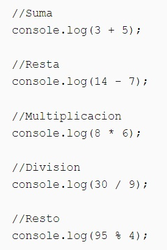
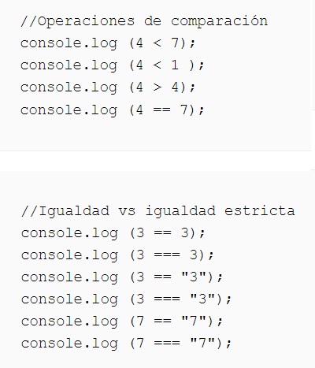

Valores, tipos y operadores
Para poder trabajar con miles de millones de bits sin perdernos, debemos separarlos en trozos que representen piezas de información. En un entorno JavaScript, esos trozos se llaman valores. Aunque todos los valores están hechos de bits, juegan diferentes roles. Cada valor tiene un tipo que determina su rol. Algunos valores son números, algunos son piezas de texto, otros son funciones, etc.
Números
JavaScript utiliza un número fijo de 64 bits para almacenar un valor numérico, lo que significa que la cantidad de números diferentes que se puede representar es limitada aunque sea grande. Con N dígitos decimales, se puede representar 10N números. Con 64 dígitos binarios, se puede representar 264 = 18.000.000.000.000.000.000 diferentes números.
Cuando la memoria de la computadora era más pequeña, se usaban grupos de 8 o 16 bits para representar números. Era frecuente el accidental desbordamiento de tales números pequeños para terminar con un número que no encajaba en el número dado de bits. Hoy en día, incluso las computadoras que caben en un bolsillo tienen mucha memoria, por lo que se puede usar trozos de 64 y el desbordamiento solo ocurre con números verdaderamente astronómicos.
Pero entre los 264 también se almacenan números negativos, por lo que un bit indica el signo del número. Un problema mayor es que los números fraccionarios también deben estar representados. Para hacer esto, algunos de los bits se usan para almacenar la posición del punto decimal. El número entero máximo real que se puede almacenar está más en el rango de 9.000.000.000.000.000, que sigue siendo enorme.
Los cálculos con números enteros son siempre precisos pero los cálculos con números fraccionarios no lo son. Así como π (pi) no puede expresarse con precisión mediante un número finito de dígitos decimales, muchos números pierden precisión cuando solo hay 64 bits disponibles para almacenarlos. Pero esto causa problemas prácticos solo en situaciones específicas. Lo importante es ser consciente de ello y tratar los números digitales fraccionarios como aproximaciones, no como valores precisos.
Aritmética
Las operaciones aritméticas como la suma (+) o la multiplicación (*) toman dos valores numéricos y producen un nuevo número a partir de ellos. Los símbolos + y * se llaman operadores binarios. Se denominan operadores binarios para aritmética porque se aplican a dos operandos (números) y producen un resultado o nuevo valor.
Los operadores binarios para aritmética son suma (+), resta (-), multiplicación(*), división (/) y módulo(%).
Números Especiales
Hay tres valores especiales en JavaScript que se consideran números pero no se comportan como números normales. Los dos primeros son Infinity e -Infinity, que representan los infinitos positivo y negativo. Infinity - 1 sigue siendo Infinito, y así sucesivamente. No se puede confiar demasiado en el cálculo basado en el infinito. No es matemáticamente sólido y conducirá rápidamente al siguiente número especial: NaN, que significa "no es un número", aunque es un valor del tipo de número. Se obtendrá este resultado cuando, por ejemplo, se intente calcular 0 / 0 (cero dividido por cero), Infinity - Infinity, o alguna operación similar.
Precedencia de Operadores
La precedencia de operadores determina el orden en el cual los operadores son evaluados uno respecto del otro. Los operadores con mayor precedencia se convierten en los operandos de los operadores con menor precedencia.
Operadores de Comparación
Los operadores de comparación son: mayor que (>), menor que (<), mayor o igual (>=), menor o igual (<=), igual==(se representa con doble igual) y distinto de (!=).
